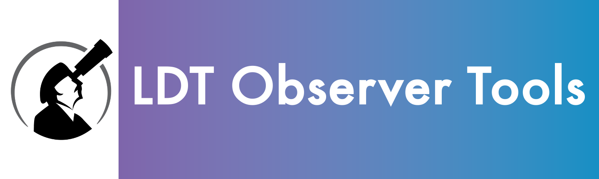

LMI Tools
DeVeny Tools
General LDT Tools
For developers
Python Version
>=3.10,<3.12
Required for users
astropy>=5.1, ccdproc, darkdetect, matplotlib, numpy>=1.22, pysimplegui, requests, scipy>=1.9, setuptools, setuptools_scm, tqdm
astropy>=5.1
ccdproc
darkdetect
matplotlib
numpy>=1.22
pysimplegui
requests
scipy>=1.9
setuptools
setuptools_scm
tqdm
Optional pypeit requirements
pypeit
pypeit[specutils]>=1.14.0
Required for developers
black, pylint, pypeit[specutils]>=1.14.0, pyyaml, sphinx, sphinx-automodapi, sphinx-subfigure, sphinx_rtd_theme==1.2.2, stomp.py, xmltodict
black
pylint
pyyaml
sphinx
sphinx-automodapi
sphinx-subfigure
sphinx_rtd_theme==1.2.2
stomp.py
xmltodict